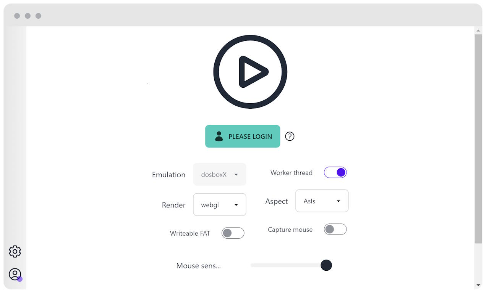

Getting Started js-dos does not require any backend to start. You need to have some static website hosting where you put your webpage with DOS.
You can start with any template of webpage you want. You only need a div element where to place the DOS window.
For example, you can use following template:
<!DOCTYPE html>
<html lang="en">
<head>
<meta charset="UTF-8">
<meta name="viewport" content="width=device-width, initial-scale=1.0">
<meta http-equiv="X-UA-Compatible" content="ie=edge">
<title>My Awesome Website</title>
</head>
<body>
<h1>My Awesome game</h1>
</body>
</html>
Adding js-dos to your web page This is a common thing in web development, you need to add js-dos related scripts to your webpage. js-dos provides a CDN with the latest version, just add this html to <head> section of page:
<!-- js-dos style sheet -->
<link rel="stylesheet" href="https://v8.js-dos.com/latest/js-dos.css">
<!-- js-dos -->
<script src="https://v8.js-dos.com/latest/js-dos.js"></script>
Alternatively, you can download the latest version of js-dos from releases page. Or, install it via npm .
Provide js-dos bundle to run The easiest way to run some program is to prepare a js-dos bundle . You can do it manually, but the easier way is to use Studio .
In this example, we will use a bundle of Digger game. Direct link to it:
https://v8.js-dos.com/bundles/digger.jsdos
Create div element and run game Create a <div> element in the body section and configure js-dos to use it:
<div id="dos" style="width: 100vw; height: 60vw;"></div>
<script>
Dos(document.getElementById("dos"), {
url: "https://v8.js-dos.com/bundles/digger.jsdos",
});
</script>
The Dos constructor takes two arguments:
div element where to place the DOS window. We used the id dos to indicate to js-dos which element to use.
options game bundle
<!DOCTYPE html>
<html lang="en">
<head>
<meta charset="UTF-8">
<title>js-dos digger 8.xx</title>
<style>
html, body {
height: 100%;
}
#dos {
width: 100%;
height: 100%;
}
</style>
<!-- js-dos style sheet -->
<link rel="stylesheet" href="https://v8.js-dos.com/latest/js-dos.css">
<!-- js-dos -->
<script src="https://v8.js-dos.com/latest/js-dos.js"></script>
</head>
<body>
<div id="dos" style="width: 100%; height: 100%"></div>
<script>
Dos(document.getElementById("dos"), {
url: "https://v8.js-dos.com/bundles/digger.jsdos",
});
</script>
</body>
</html>
Test in browser Open your test webpage in browser, you should see something like this:

Do not try to run it using file:// protocol, it will not work. You need to host it locally. (http://localhost:8080).
21 апреля 2025